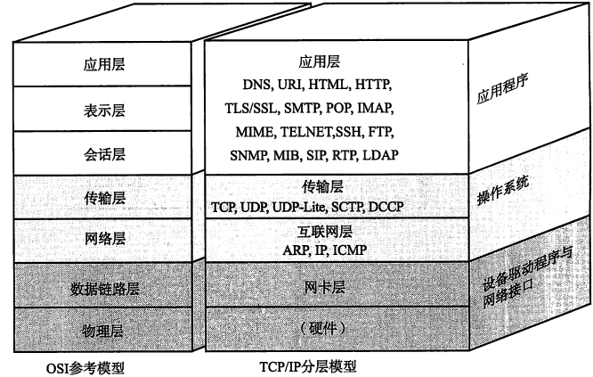
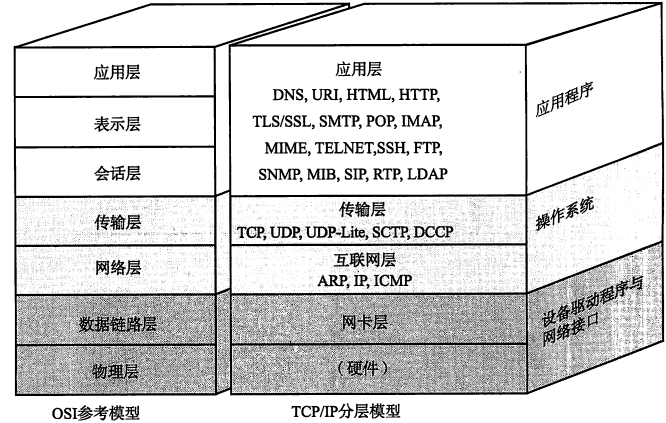

计算机网络基础
网络基础知识
网络主要设备及作用
| 设备 | 作用 |
|---|---|
| 网卡 | 使计算机连网的设备 |
| 中继器（Repeater） | 从物理层上延长网络的设备 |
| 网桥（Bridge）/2层交换机 | 从数据链路层上延长网络的设备 |
| 路由器（Router）/3层交换机 | 通过网络层转发分组数据的设备 |
| 4~7层交换机 | 处理传输层以上各层网络传输的设备 |
| 网关（gateway） | 转换协议的设备 |
传输速率与吞吐量
两个设备之间数据流动的物理速度称为传输速率（每秒比特数 bps），传输速率高不是指单位数据流动的速度有多快，而是指单位时间内传输的数据量有多少（各传输媒介中信号的流动速度时恒定的）。
主机之间实际的传输速率被称为吞吐量（每秒比特数 bps）,吞吐量不仅衡量带宽，同时也衡量主机的CPU处理能力、网络的拥堵程度、报文中数据字段的占有份额（不含报文首部，只计算数据字段本身）等信息。
中继器
- 中继器是对减弱的信号进行放大和发送的设备，由电缆传过来的电信号或光信号经由中继器的波形调整和放大再传给另一个电缆；
- 中继器通过物理层的连接延长网络；
- 即使在数据链路层出现某些错误，中继器仍然转发数据；
- 中继器无法改变传输速度；
网桥/2层交换机
网桥在数据链路层面上连接两个网络的设备。识别数据帧，存储于内存，重新生成信号作为一个全新的帧发送给相连的另一个网段。以太网等网络经常使用的交换集线器现在基本也属于网桥的一种，相当于持有多个端口（计算机外部接口称为端口，和TCP/UDP等的端口不同）的网桥。
TCP/IP协议族
 

数据传输时，对于TCP来说，数据部分为应用层数据，对IP来说，数据部分为TCP首部和TCP数据合起来的部分；
数据包
包：全能性述语；
帧：用于表示数据链路层中包的单位；
数据报：是IP和UDP等网络层以上的分层中包的单位；
段：表示TCP数据流中的信息；
消息：应用协议中的数据的单位；
数据链路
数据链路相关技术
MAC地址

MAC地址不总是唯一的，实际上，即使MAC地址相同，只要不是同属于一个数据链路就不会有问题。
例如虚拟机没有硬件网卡，只能由虚拟软件自己设置MAC地址给虚拟网卡
共享介质型网络
设备之间使用同一个载波信道进行发送和接收。为此，基本上采用半双工通信，有必要对介质进行访问控制
争用方式
- CSMA(载波监听多路访问) 先到先得方式，空闲就发，多个站同时发产生冲突
- CSMA/CD 载波信道没有数据流动，任何站都可以发送数据；检查是否发生冲突，一旦发生冲突，先发送阻塞报文再停止发送，立即释放载波信道；放弃发送以后，随机延时一段时间，再重新争用介质，重新发送帧。
令牌方式
只有获得令牌的站发送数据。一不会有冲突，二每个站平等循环获得令牌的机会。
非共享介质网络
网络中每个站直连交换机，由交换机负责转发数据帧。此方式下，发送端与接收端并不共享通信介质，因此很多情况下采用全双工通信方式。
一对一连接全双工通信的方式不会发生冲突，不需要CSMA/CD的机制、
半双工是指，只发送或只接收的通信方式。若两端同时说话，听不见对方说的话的。采用CSMA/CD方式的以太网，独占信道。
全双工，允许再同一时间既可以发送数据也可以接收数据。以太网使用交换机与双绞线电缆，既可以通过交换机的端口与计算机之间进行一对一的连接，也可以通过相连电缆内部的收发线路分别进行接收和发送数据。
以太网
计算机内部二进制，1K=1024，1M=1024K，1G=1024M
以太网以时钟频率决定传输速度，1K=1000，1M=1000K，1G=1000M
以太网帧格式
以太网帧前端有一个叫前导码的部分，由01数字交替组而成，表示以太网帧的开始，也是对端网卡能够确保与其同步的标志。前导码末尾有一个叫SFD（Start Frame Delimiter）的域，值时“11”。这个域之后就是以太网帧的本体。

以太网帧本体的前端是以太网的首部，总共占14个字节。分别是6个字节的目标MAC地址、6个字节的源MAC地址以及2个字节的上层协议类型。

类型标识以太网再上一层网络协议的类型，哪种类型就转给哪种类型的处理模块（ARP, RARP, IP, …）
帧尾的FCS(Frame Check Sequence)：4个字节，设置FCS的目的是为了判断数据包是否由于噪声而被破坏，用CRC方式校验。
无线通信
MAC层中物理地址与以太网相同，都是用MAC地址，而介质访问控制上则使用CSMA/CD相似的CSMA/CA方式。
在物理层上使用电磁波或红外线。
IP协议（互联网层）
IP基础知识
主机：配置有IP地址，但是不进行路由控制的设备
路由器：既配有IP地址又具有路由控制能力的设备
节点：主机和路由器的统称
IP面向无连接。在发包之前，不需要建立与对端目标地址之间的连接。这表示上层如果雨打需要发送给IP的数据，该数据会立刻被压缩成IP包发送出去。原因：一是为了简化，二是为了提速。
IP地址基础知识
地址分类
ABCD类地址
分配注意事项
主机地址不可以全部为0或全部为1。C类地址每个网段最多只能有254（2^8-2=254）个主机地址。
广播地址
本地广播和直接广播
本地广播：本网络内的广播，192.168.0.0/24的广播地址为192.168.0.255；
直接广播：192.168.0.0/24向192.168.1.0/24发送的广播地址为192.168.1.255
IP多播
广播会给毫无关系的网络或主机带来影响，广播无法穿透路由（路由一般不会转发广播地址）
多播使用D类地址，首位开始到第4位是“1110”，则可以认为是多播地址。范围224.0.0.0~239.255.255.255。从224.0.0.0到224.0.0.255范围不需要路由控制，同一链路内也能实现多播，而在这个范围之外设置多播地址会给全网所有组内成员发送多播的包。
对于多播，所有主机（路由器以外的主机和终端主机）必须属于224.0.0.1的组，所有路由器必须属于224.0.0.2的组。
全局地址和私有地址
私有网络的地址地址
| 类别 | 地址范围 |
|---|---|
| A类 | 10.0.0.0~10.255.255.255（10/8） |
| B类 | 172.16.0.0~172.31.255.255（172.16/12） |
| C类 | 192.168.0.0~192.168.255.255（192.168/16） |
包含在这个范围内的IP地址属于私有IP，而在此之外的IP地址称为全局IP。
私有IP最早没有计划接入互联网，用于互联网之外的独立网络。当互换私有IP与全局IP的NAT技术诞生后，就实现了与互联网主机的通信。
全局IP由ICANN进行管理，在日本则由一个叫做JPNIC的机构进行管理。
路由控制
静态路由控制：管理员手动设置
动态路由控制：路由器与其他路由器相互交换信息时自动刷新
IP地址和路由控制
最长匹配：相同位数最多。此外如果路由表中下一个路由器的位置记录着某个主机或路由器网卡的IP地址，意味着“发送的目标地址属于同一链路”（目标地址在同一链路中的情况下，路由表的记录格式可能会根据操作系统和路由器种类的不同而有所区别）。
默认路由
0.0.0.0/0（子网掩码也是0.0.0.0）或default，“/0”表示没有标识IP地址（0.0.0.0的IP地址应记为0.0.0.0/32）
主机路由
IP地址/32
环回地址
同一台计算机上的程序之间进行网络通信时所使用的一个默认地址。计算机使用一个特殊的IP地址127.0.0.1作为环回地址，与该地址具有相同意义的是一个叫做localhost的主机名。使用这个IP或主机名时，数据包不会流向网络。
IP报文的分片与重组
以太网默认MTU为1500字节。经过分片之后的IP数据报在被重组的时候，只能由目标主机进行。路由器虽然做分片但不会进行重组。
路径MTU发现
分片机制让路由器的处理负荷加重。因此，只要允许，是不希望由路由器进行IP数据包的分片处理的。其次，一旦某个分片丢失，造成整个IP数据报作废。
路径MTU是指从发送端主机到接收端主机之间不需要分片时最大MTU的大小，即路径中存在的所有数据链路中最小的MTU。路径MTU发现从发送主机按照路径MTU的大小将数据报分片后进行发送，这可以避免在中途的路由器上进行分片处理。
原理：
- 发送端发送IP数据报，设置禁止分片，途中路由器遇到需要分片才能处理的大包也不会分片，而是丢弃。随后通过ICMP的不可达消息将链路上MTU的值发给主机。
- 下次，将这个MTU设为当前MTU，然后进行分片。如此往复，直到数据报发送到目标主机位置没有再收到任何ICMP（不断通过ICMP报文更新MTU值），就认为最后一次ICMP通知的MTU时最适合的MTU值。
- UDP同IP，在TCP情况下，根据MTU计算出最大段长度（MSS），然后再根据这些信息进行数据报的发送。因此，在TCP中如果采用路径MTU发现，IP层则不会再进行分片处理。
IPv4首部

首部长度
由4比特构成，表明IP首部的大小，单位为4字节（32比特）。对于没有可选项的IP包，首部长度则设置为“5”。也就是说，当没有可选项时，IP首部的长度为20字节。
填充
有可选项情况下，首部字段可能不是32比特的整数倍。为此，通过向字段填充0，调整为32比特的整数倍。
ICMP首部

传输层
TCP
TCP头部

TCP通过校验和、序列号、确认应答、重发控制、连接管理以及窗口控制等机制实现可靠性传输。
在TCP模块中处理下层发给自己的包，首先会计算一下校验和，判断数据是否被破坏，然后检查是否在按照序号接收数据。最后检查端口号，确定具体的应用程序。
UDP
UDP不提供复杂的控制机制，利用IP提供面向无连接的通信服务。
UDP首部

应用层
FTP
FTP (File Transfer Protocal, 文件传输协议，RFC959) 的目标是提高文件的共享性，提供非直接使用远程计算机，使存储介质对用户透明和可靠高效地传送数据。
FTP 采用客户 / 服务器模式，客户机与服务器之间利用 TCP 建立连接，客户可以从服务器上下载文件，也可以把本地文件上传至服务器。
FTP 客户端和服务器之间需要建立两个 TCP 连接：控制连接和数据连接。控制连接传送命令和响应，数据连接只传输数据（上传 / 下载）。
FTP工作模式
PORT（主动模式）与 PASV（被动模式）。两种模式下，控制连接都是由客户端发起（关闭发起者不一定？）；而数据连接，在主动模式中由服务器主动发起，在被动模式中由客户端发起，服务器开启数据端口（> 1024）被动监听。 （只有数据模式才分主动被动）
FTP服务器控制端口一般为21，数据端口一般为20